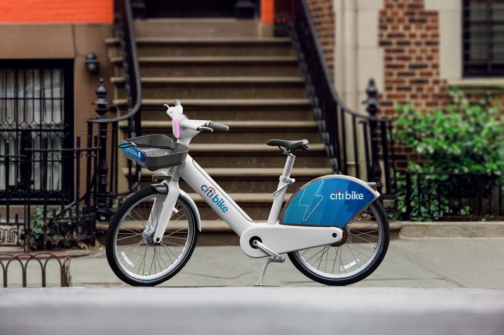
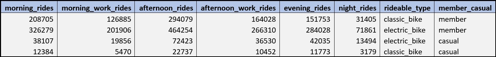
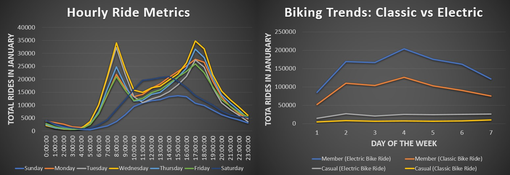
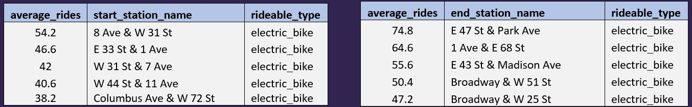
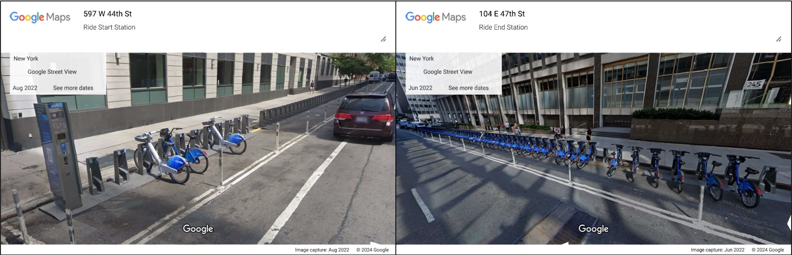

NYC Biking Trends: Insights through Analytics
Incorporating insights from a robust dataset of 2 million rides, this analytics unveil the transformation brought about by electric bikes in New York City. This data-driven revelation emphasizes the profound impact of electric bikes, offering businesses and policymakers invaluable insights into the changing landscape of transportation in the bustling metropolis.
In addition, this study looks closely at biking in New York City, aiming to understand how it helps our health and what the government can do to make it safer and more popular. After finding out that only 66,000 people ride bikes daily in a city of 8.47 million, the study calls for a plan to make biking more common and easier for everyone. It's not just about the numbers; it's about making biking a bigger and more accessible part of city life.
New Yorkers Favor Electric Bikes
A dive into the data using SQL reveals a clear winner in New York City's bike scene – electric bikes. They're the go-to choice for most riders, especially casual ones, beating out classic bikes, even among Citi Bike members. The reason? People don't want to break a sweat on their way to or from work. Electric bikes offer a smooth ride without the physical effort, making them the top choice for navigating the city's busy streets. A surge in older riders could contribute to the growing popularity of electric bikes, leading to an uptick in their ridership.
The Daily Routine
In the early hours of every New York morning, a distinct pattern emerges. Starting from residential zones, bicyclists follow a routine that leads them to the energetic heart of commercial districts. This pattern repeats itself each day, with the morning peak, between 7 am and 9 am. The afternoon surge, from 4 pm to 7 pm, marks another predictable routine - cyclists returning home after a day's work.
The noticeable decline in rides on Mondays, Thursdays, and Fridays may be attributed to the increasing prevalence of remote work. Companies often mandate three days of in-office work, leading individuals to opt for either Tuesday to Thursday or Monday to Wednesday for their on-site days. The overlapping workdays of Tuesday and Wednesday consequently result in peak ridership during this midweek period. This trend highlights a correlation between remote work policies and the distribution of commuters throughout the workweek, shedding light on the dynamic relationship between changing work structures and transportation patterns.
Busiest Bike Stations Unveil Valuable Insights
In busy New York City, lots of folks are picking electric bikes at the top five busiest bike stations. These bikes are cool because they're quiet and easy to ride. They zip through the city streets, making life easier for people in a hurry. In the middle of all the action, these electric bikes show how we can move around the city fast and still be good to the environment. So, in the city that never sleeps, more and more people are choosing electric bikes to keep up with the fast pace of New York life.
In the ongoing exploration of low ridership in New York City, a closer look via Google Street View exposes a striking discrepancy at Citi Bike Stations. Residential areas depict empty stations, while their commercial counterparts overflow with bikes. This visual insight highlights a potential accessibility gap, sparking conversations about the unequal distribution of bike-sharing services. It urges city officials to address these disparities, fostering a more inclusive biking culture across all neighborhoods.
Actionable Recommendations
Biking not only provides an enjoyable and environmentally friendly means of transportation but also offers a plethora of health benefits. Regular cycling contributes to improved cardiovascular health, increased muscle strength, and enhanced overall fitness. It helps in managing weight, reducing stress, and promoting mental well-being. To further encourage and facilitate biking in New York, the implementation of new technology plays a crucial role. Advanced bike-sharing systems, equipped with smart sensors and real-time tracking, ensure the availability of bikes at stations throughout the city. This technology-driven approach optimizes bike distribution, making it convenient for residents and visitors to access bikes easily, thereby promoting a healthier lifestyle and contributing to a more sustainable urban environment.
References:
- Citi Bike Data: https://citibikenyc.com/system-data